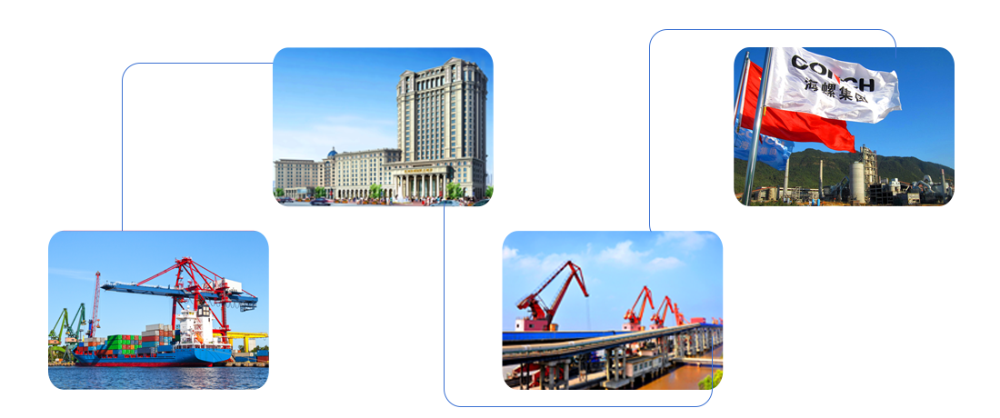

安徽海螺集团有限责任公司是我国最大的建材企业集团之一，组建于1996年9月，是国务院120家大型试点企业集团，拥有国家级技术研发中心，总部设在安徽芜湖市。集团控股经营海螺水泥和海螺型材两家上市公司，经营产业涉及水泥、化学建材、节能环保、国际贸易、酒店餐饮等领域，现有员工5万余人。
海螺集团的前身是安徽宁国水泥厂，筹建于改革开放之初的1978年，是中国最早采用新型干法生产工艺的大型水泥企业之一。
1996年9月，海螺集团在宁国水泥厂发展的基础上改制设立，开启了集团化发展征程。通过实施沿江沿海“T”型发展战略，开创了具有海螺特色的“熟料基地+粉磨工厂”的商业运营模式；通过引进消化、联合开发和集成创新，实现了中国新型干法水泥装备的国产化、大型化、集约化；通过科学论证，确立了集团中长期发展规划和远景目标；通过精细管理，实现了生产的低成本和运营的高效率；通过股权、事业等激励机制，打造了一支锐意进取、专业敬业的员工队伍。海螺集团由此走出了一条由小到大、由弱变强的快速发展之路，创造了中国水泥工业史上一个又一个奇迹。
超前的战略引领、敢为人先的创新突破、积极进取的人才团队，实现了海螺集团超常规、跨越式发展。集团先后获得全国建材系统先进单位、全国“五一”劳动奖状、安徽省创新型企业、节能中国十大贡献企业、中国工业大奖表彰奖等殊荣。海螺集团连续13年入围中国企业500强，荣登2017年中国企业500强第158位，中国制造业企业500强第63位，并首次跻身中国跨国公司100大榜单。
安徽海螺水泥股份有限公司是集团的主业板块，公司成立于1997年9月1日 ，于1997年10月21日在香港挂牌上市，开创了中国水泥行业境外上市的先河，是A+H股上市公司，下属140多家子公司，分布在全国18个省、市、自治区和印尼、缅甸、老挝、柬埔寨、俄罗斯等国，员工4万余人。海螺水泥是世界上最大的单一品牌供应商，已形成水泥、熟料总产能达5.57亿吨，产品销量连续22年位居中国单品牌第一，13年名列亚洲首位，位居世界第二。2016年，海螺水泥实现利润总额110多亿元，占水泥行业利润总额23%。
除水泥主业外，公司经营产业还涉及塑料制品、装备制造、新型物流、建筑安装、耐火材料、国际贸易等领域。
 未经51job.com 同意，不得转载本网站之所有招聘信息及作品；无忧工作网版权所有©1999-2017
未经51job.com 同意，不得转载本网站之所有招聘信息及作品；无忧工作网版权所有©1999-2017